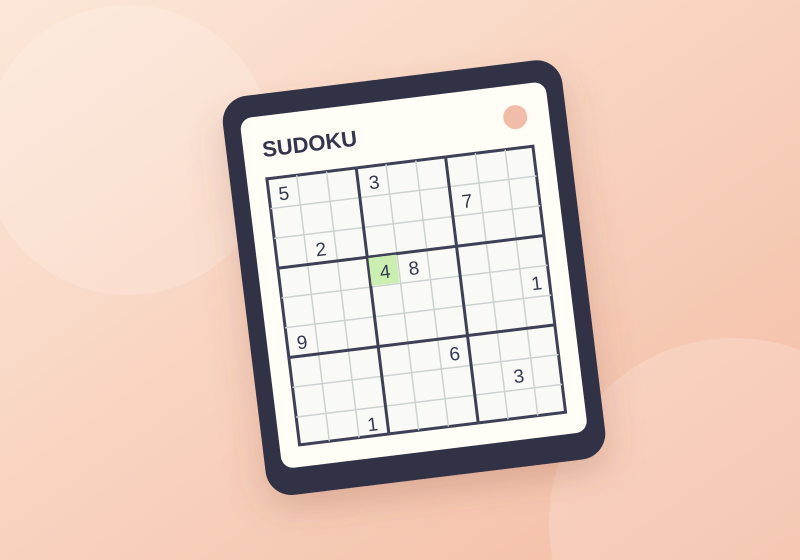
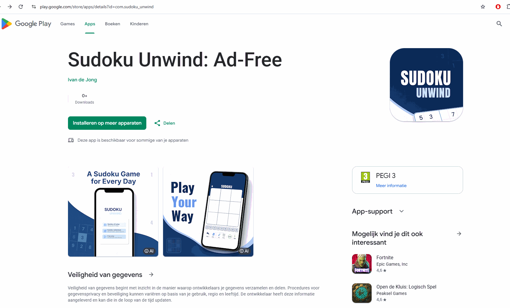

Game development · Unity
Van Unity-project naar Google Play.
Sudoku Unwind begon als een project in Unity en groeide uit tot een Android-app. Ik bouwde de game, testte die op mijn telefoon en bereidde de app voor op een test via Google Play.

01 / Wat ik heb geleerd
Bouwen met Unity.
Nieuwe technieken die ik tijdens het maken van de game heb geleerd en toegepast.
- Nine-slice
Een afbeelding opdelen in negen stukken, zodat de randen netjes blijven wanneer een UI-element groter of kleiner wordt. - Prefab scenes
Herbruikbare game-objecten en UI-elementen maken en scenes gebruiken om onderdelen van de game te organiseren. - Asset packs
Kant-en-klare visuele onderdelen gebruiken om de game vorm te geven en sneller een samenhangende uitstraling te maken.
02 / Google Play
De app in de Play Store.
De Google Play-pagina van Sudoku Unwind.

03 / Testfase
Van APK naar testers.
Ik publiceerde een APK op mijn testtelefoon om de game op een echt apparaat uit te proberen. Daarna maakte ik een Google Developer-account aan en nodigde ik vrienden, familie en collega's uit als testers.